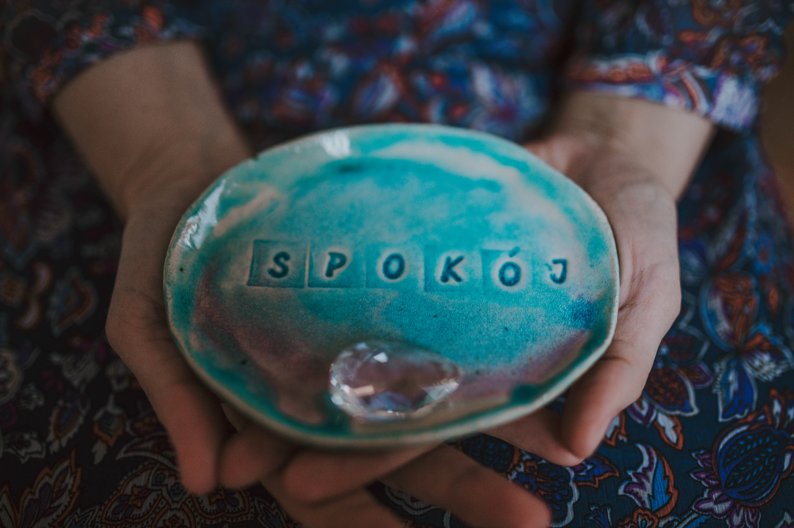
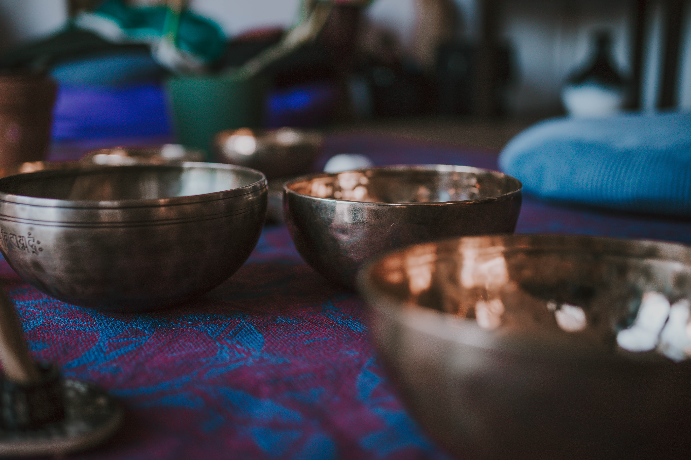

Imrama. Ładowanie strony...
O MNIE
Nazywam się Marzena Podlaska. Jestem nauczycielką jogi yin oraz przewodniczką w procesach wyciszenia, regeneracji i pogłębiania kontaktu ze sobą. Pracuję w oparciu o filozofię TAO oraz Tradycyjną Medycynę Chińską, łącząc pracę z ciałem, oddechem, emocjami i energią.
Ukończyłam 200-godzinny kurs nauczycielski yin jogi w międzynarodowej szkole Yinspiration — światowym pionierze w tworzeniu kompleksowych szkoleń yin jogi, uznawanym za złoty standard w tej dziedzinie. Autorski program Jo Phee przeszkolił setki nauczycieli i trenerów yin jogi na całym świecie.
Od kilku lat zgłębiam holistyczne podejście do zdrowia i dobrostanu. Uczestniczyłam w kursach jogi nidry, terapii energią oraz pracy z wibracjami mis dźwiękowych (tybetańskich) z wykorzystaniem technik HeivaHeal oraz metody Access Bars. Czerpię również z ajurwedy — m.in. w obszarze czakr i psychologii. Szczególnie bliska jest mi Tradycyjna Medycyna Chińska, zwłaszcza jej spojrzenie na emocje i ich wpływ na zdrowie. Z zainteresowaniem zgłębiam także tantryczną ścieżkę kobiecości.
Wierzę w pracę z energią oraz w to, że nasze myśli, emocje i przekonania mają realny wpływ na to, co manifestuje się w naszym życiu. Osobiście, w swojej własnej praktyce, korzystam z medytacji oraz pracy z polem jako przestrzeni wglądu i głębszego zrozumienia siebie. Wspieram się również techniką uwalniania emocji wg Davida R. Hawkins’a. Traktuję te metody jako delikatne, wspierające narzędzia na mojej drodze do większej harmonii i wewnętrznej spójności.
Imrama ma dla mnie głęboko symboliczne znaczenie. W języku celtyckim oznacza „podróż morską”, jednak nie w sensie dosłownym. To metafora duchowej, mistycznej i transformującej wędrówki — podróży duszy w poszukiwaniu mądrości, sensu i wewnętrznej przemiany.
Przestrzeń, którą tworzę, jest miejscem dla podróżniczek, poszukiwaczek i wędrowczyń. Dla kobiet, które potrzebują spokoju i ciszy oraz głębszego kontaktu ze sobą.
To przestrzeń wypełniona miłością i akceptacją.
Wierzę, że to również miejsce dla Ciebie.
Zapraszam z serca ♥
JOGA YIN
Joga yin opiera się na filozofii TAO i Tradycyjnej Medycynie Chińskiej. Charakteryzuje się wolnym tempem, długim czasem pozostawania w pozycji (od 2 do 10 minut) i spokojnym oddechem. Działa doskonale na pracę z głębszymi tkankami więzadeł, ścięgien, powięzi, a nawet kości. Odżywia ciało, przywraca i utrzymuje naturalną ruchomość stawów. Jednocześnie poprawia funkcjonowanie organów wewnętrznych, stąd często nazywana jest "akupunkturą bez igieł".
Yin joga koi i regeneruje to, co potrzebuje naszej uwagi. Dlatego cisza i spowolnienie, które znajdujemy w tej praktyce, pomagają naładować nasze wewnętrzne baterie.
Dlaczego warto?
Regularna praktyka daje wiele korzyści fizycznych:
- - zwiększa elastyczność i mobilność (poprawia zakres ruchu w stawach i rozciąga powięź),
- - regeneruje (odciąża układ nerwowy, wspiera procesy odnowy organizmu),
- - wspiera zdrowie kręgosłupa i stawów (pomaga redukować sztywność, przeciwdziała skutkom siedzącego trybu życia),
- - pobudza przepływ energii Qi/prany (inspirowana medycyną chińską – joga yin działa na meridiany tj. energetyczne kanały w ciele).
Korzyści mentalne i emocjonalne jogi yin to:
- - głębokie wyciszenie i relaks (pomaga redukować stres i napięcie),
- - lepsza koncentracja (rozwija uważność i cierpliwość),
- - praca z emocjami (zatrzymanie się w pozycji pozwala dostrzec i przepracować napięcia nie tylko w ciele, ale i w psychice),
- - wsparcie w medytacji (przygotowuje ciało i umysł do dłuższego przebywania w ciszy).
Zajęcia są odpowiednie dla każdego niezależnie od poziomu zaawansowania.

DŹWIĘKOTERAPIA
W połączeniu z dźwiękiem instrumentów relaksacyjnych joga yin działa nie tylko na ciało i oddech, ale też - poprzez wibracje i częstotliwość dźwięku - na system nerwowy. Taka kombinacja daje głębsze odprężenie, rozluźnienie napięć, lepszy przepływ energii, ułatwioną medytację, poczucie bezpieczeństwa i zanurzenia. Daje poczucie harmonii i "resetu energetycznego". To podróż nie tylko w głąb ciała, ale też świadomości.
Instrumenty, które możesz usłyszeć podczas zajęć to misy tybetańskie, bębny, dzwonki, handpan, kij deszczowy i kamertony.
W przypadku indywidualnej sesji dźwiękowej osoba leży w wygodnej pozycji. Instrumenty są delikatnie poruszane wokół ciała, a w przypadku mis – czasem również ustawiane na ciele lub bardzo blisko niego. Dźwięk i wibracja docierają do tkanek, mięśni i płynów ustrojowych, wspierając naturalne procesy rozluźniania i regeneracji.
Jak działa masaż dźwiękiem?
Na ciało:
Dźwięk pomaga rozluźnić napięcia mięśniowe, uspokaja układ nerwowy i wspiera regenerację. Wibracje sprzyjają głębokiemu odprężeniu, porównywalnemu do stanu pomiędzy snem a czuwaniem.
Na emocje:
Sesja może przynieść ulgę w stresie, napięciu emocjonalnym i przeciążeniu. Dźwięk pomaga „rozpuścić” to, co zatrzymane, przywracając poczucie lekkości i spokoju. Na umysł:
Spowolnienie fal mózgowych ułatwia wyciszenie myśli, poprawia koncentrację i wspiera kontakt z wewnętrzną ciszą.
W ujęciu TCM i TAO:
Masaż dźwiękiem wspiera swobodny przepływ energii Qi, harmonizuje yin i yang oraz pomaga powrócić do naturalnego rytmu organizmu – bez wysiłku i ingerencji.
Dla kogo jest indywidualna sesja dźwiękowa?
dla osób zestresowanych i przemęczonych
przy napięciach w ciele i trudnościach z wyciszeniem
dla kobiet chcących wrócić do kontaktu z ciałem i energią yin
jako wsparcie w procesach zmiany, regeneracji i powrotu do siebie
Sesja ma charakter indywidualny i nieinwazyjny, a jej przebieg jest dostosowany do aktualnych potrzeb osoby przyjmującej.
WAŻNE: Przeciwwskazaniami do sesji dźwiękowych (podczas jogi i indywidualnych) są: ciąża do 12 tygodnia, niekontrolowane zażywanie środków psychoaktywnych, schizofrenia paranoidalna, rozrusznik serca, padaczka.

GRAFIK
JOGA YIN w DŹWIĘKACH MIS TYBETAŃSKICH
godz. 18.00-19.30, sala nr 59
MDK Szopienice-Burowiec
ul. Generała Józefa Hallera 28, Katowice
60 zł pojedyncze zajęcia, 30 zł za zajęcia w karnecie (w zależności od ilości dni w miesiącu - płatność z góry za cały miesiąc:)
Płatność: gotówka na miejscu przed zajęciami
Ważne: Na 2 h przed zajęciami nie jedz obfitych posiłków. Ubierz się ciepło. Weź ulubioną bluzę i grube skarpetki. Miej również swoją matę.
Ważne: Przeciwwskazaniami do sesji z misami dźwiękowymi są: ciąża do 12 tygodnia, niekontrolowane zażywanie środków psychoaktywnych, schizofrenia paranoidalna, rozrusznik serca, padaczka.
OFERTA
Imrama to mobilne studio jogi yin połączone z dźwiękiem instrumentów relaksacyjnych: mis tybetańskich, handpanu, bębna, dzwonków i kamertonów.
SESJE INDYWIDUALNE (jogi yin i/lub masaż dźwiękiem) (60 minut)
Cena: 150-200 zł
Chcesz skorzystać? Napisz do mnie :)
ZAJĘCIA GRUPOWE (90 minut)
Cena: 30-70 zł
Sprawdź grafik i zapisz się tam, gdzie ci najlepiej :)
Pełnia z YIN - kobiecy krąg z jogą yin (180 minut)
Terminy:
1 lutego 2026 r., godz. 18.30-21.30
1 marca 2026 r., godz. 18.30-21.30
29 marca 2026 r., godz. 18.30-21.30
26 kwietnia 2026 r., godz. 18.30-21.30
31 maja 2026 r., godz. 18.30-21.30
28 czerwca 2026 r., godz. 18.30-21.30
Miejsce: Sercem i Łonem, ul. Kościuszki 18/8, Katowice
Cena: 150 zł (za jedno spotkanie)
Szczegóły TUTAJWiosna z YIN - warsztat z jogi yin w ujęciu Tradycyjnej Medycyny Chińskiej (180 minut)
Termin: 6 marca 2026 r, godz. 18.00-21.00
Miejsce: Yogisiowo, ul. Spółdzielcza 9, Pilchowice
Cena: 150 zł, przy wpłacie do 15 lutego - 100 zł
Szczegóły TUTAJKurs Jogi Yin dla początkujących (90 minut)
Termin: wtorki, godz. 18.15-19.45 (3, 10, 17, 24, 31 marca 2026 r.)
Miejsce: M.A. Ukochana, ul. Kościuszki 38/14, Katowice
Cena: 350 zł, przy wpłacie do 23 lutego - 250 zł (cały kurs - 5 spotkań)
Pojedyncze wejście: 70 zł (jeśli byłaś/eś już u mnie na zajęciach - 60 zł:)
Szczegóły TUTAJKOBIECE WYJAZDY
Kobiecy wyjazd w Beskid Wyspowy. Z miłości do siebie.
Termin 13 - 15 listopada 2026
Szczegóły TUTAJ